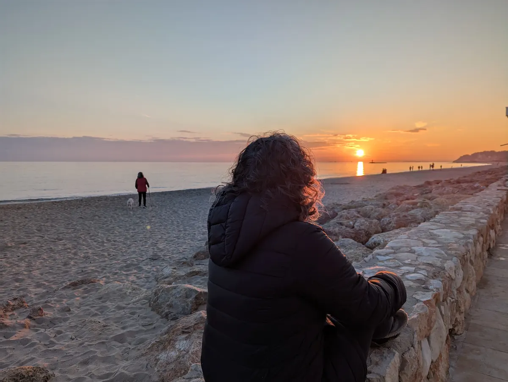
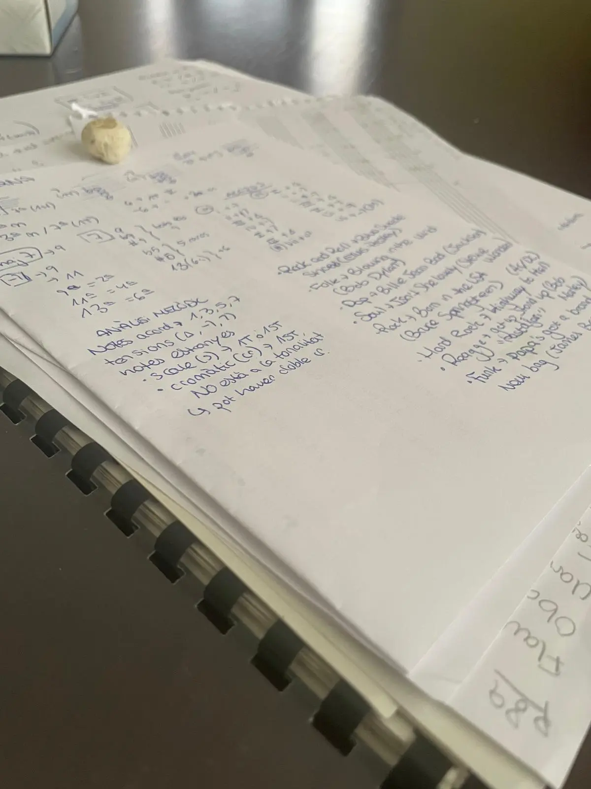
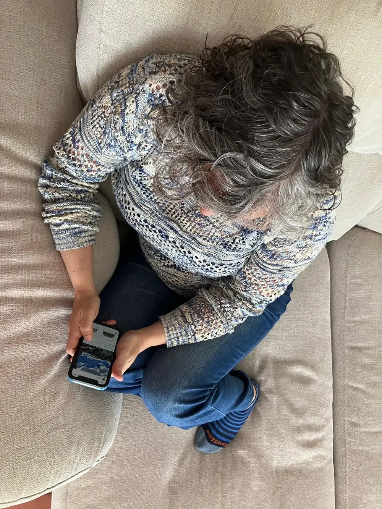
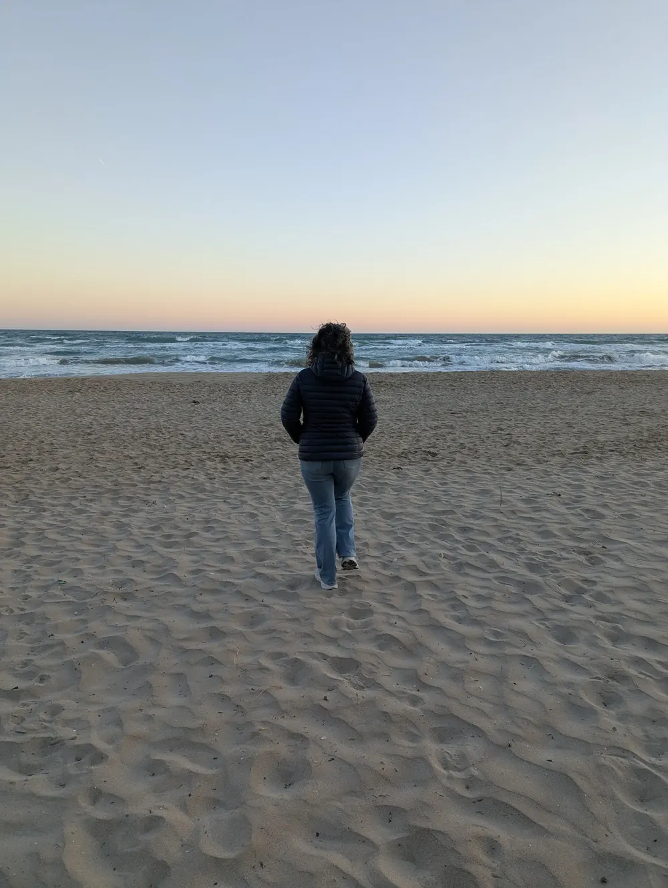

12 d'octubre de 2026
Per què ens costa tant gestionar la frustració?
Per què ens frustrem quan les coses no surten com esperàvem? Descobreix què és la frustració, com ens afecta i com aprendre a gestionar-la.
Llegir més →Reflexions i recursos sobre benestar emocional
12 d'octubre de 2026
Per què ens frustrem quan les coses no surten com esperàvem? Descobreix què és la frustració, com ens afecta i com aprendre a gestionar-la.
Llegir més →4 d'octubre de 2026
Et poses molt nerviós quan has de parlar davant dels altres? Descobreix què hi ha darrere la por a parlar en públic i com començar a afrontar-la.
Llegir més →21 de setembre de 2026
Quan les responsabilitats s'acumulen, pots sentir que no podràs amb tot. Descobreix com gestionar la por, l'autoexigència i la sensació de desbordament.
Llegir més →14 de setembre de 2026
Descobreix què és el síndrome del niu buit, per què pot aparèixer quan els fills marxen de casa i com adaptar-te a aquesta nova etapa vital.
 Llegir més →
Llegir més →
31 d'agost de 2026
El control, la gelosia, la culpa o la pèrdua d'autonomia poden ser senyals d'una relació poc saludable. Descobreix què observar i quins senyals no hauries de normalitzar.
Llegir més →26 de juliol de 2026
Descobreix què és l'autoestima, com es construeix, quins factors poden afectar-la i algunes maneres de començar a treballar-la amb més cura.
 Llegir més →
Llegir més →
19 de juliol de 2026
Una ruptura de parella pot remoure molt més que la pèrdua d'una persona. Descobreix per què és tan dolorosa, què és normal sentir i com començar a reconstruir la teva vida al teu ritme.
Llegir més →14 de juliol de 2026
Et costa gaudir quan les coses van bé? Descobreix per què la ment continua en alerta, què hi ha darrere de la por que les coses bones s'acabin i com començar a viure més present.
 Llegir més →
Llegir més →
7 de juliol de 2026
Demanar ajuda no sempre és fàcil. Sovint hi ha por de molestar, de semblar dèbil o la sensació que hauries de poder amb tot. Descobreix per què passa i com començar a deixar-te acompanyar.
Llegir més →29 de juny de 2026
L’assertivitat no és imposar-se ni callar el que sents. Descobreix com expressar el que penses o necessites amb respecte, i algunes eines per començar a practicar-la.
 Llegir més →
Llegir més →
22 de juny de 2026
No tenir clar què estudiar, quin camí escollir o què vols fer amb la teva vida pot generar molta pressió. Descobreix per què és normal sentir-te així i com començar a avançar sense tenir-ho tot decidit.
 Llegir més →
Llegir més →
15 de juny de 2026
Cal estar molt malament per anar a teràpia? Descobreix algunes senyals que poden indicar que és un bon moment per buscar ajuda psicològica, encara que no estiguis en una crisi.

Llegir més →7 de juny de 2026
Quan una prova, una entrevista o una situació important no surt com esperaves, poden aparèixer frustració, culpa o por al fracàs. Descobreix com gestionar la decepció sense confondre un resultat amb el teu valor personal.
 Llegir més →
Llegir més →
31 de maig de 2026
Comparar-te amb els altres pot fer-te sentir que sempre vas tard o que no ets suficient. Entén per què passa i com començar a mirar-te diferent.
Llegir més →25 de maig de 2026
Quan s’acosta una prova important, la pressió i els nervis poden acabar bloquejant-te. Descobreix com preparar-te sense tanta exigència.

Llegir més →20 de maig de 2026
Instagram no és només entreteniment. A vegades també hi busquem validació, distracció o una manera d’escapar del que sentim.

Llegir més →13 de maig de 2026
Hi ha moments en què no tens ganes de res i fins i tot les coses petites costen més del normal. Entén què pot haver-hi darrere d’aquest cansament emocional.

Llegir més →5 de maig de 2026
Frases com “tot ho faig malament” poden afectar com et sents i com et relaciones amb tu mateix/a. Entén per què apareixen i com començar a mirar-les diferent.
Llegir més →26 d'abril de 2026
Quan dones moltes voltes a les coses, el cos també ho nota. Descobreix com reduir la tensió i l’ansietat a través del cos.
Llegir més →19 d'abril de 2026
Has pres una decisió, però ara apareixen dubtes que et fan qüestionar-ho tot. Entén què hi ha darrere d’aquests pensaments.
Llegir més →8 d'abril de 2026
Hi ha moments en què saps que alguna cosa hauria de canviar, però no acabes de fer el pas.
Llegir més →4 d'abril de 2026
Les dades mostren que és molt més present del que sovint imaginem.
Llegir més →31 de març de 2026
Sempre vas amb pressa i et costa parar? Descobreix què hi ha darrere d’aquest ritme constant.
Llegir més →30 de març de 2026
És normal tindre dubtes sobre si la teràpia online pot ajudar realment...
Llegir més →Una pràctica breu per prendre consciència del cos i reduir la tensió.
Escoltar àudioPuc enviar-te reflexions i recursos de tant en tant per WhatsApp.
Escriu-me per WhatsApp